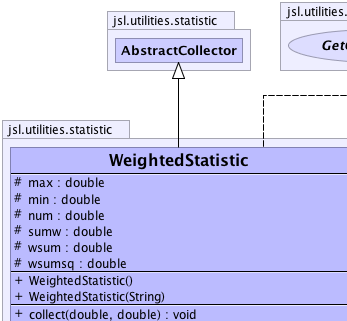
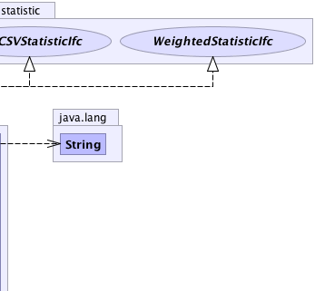
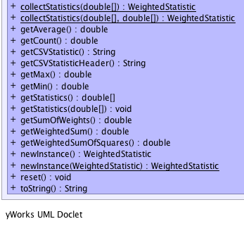

jsl.utilities.statistic.AbstractCollector
jsl.utilities.statistic.WeightedStatistic
jsl.utilities.statistic.AbstractCollector
jsl.utilities.statistic.WeightedStatistic
|
||||||||||
| PREV CLASS NEXT CLASS | FRAMES NO FRAMES | |||||||||
| SUMMARY: NESTED | FIELD | CONSTR | METHOD | DETAIL: FIELD | CONSTR | METHOD | |||||||||
java.lang.Object
public class WeightedStatistic
Collects basic weighted statistical summary
|  |  |
|  |
| Field Summary | |
|---|---|
protected double |
max
Holds the maximum of the observed data |
protected double |
min
Holds the minimum of the observed data. |
protected double |
num
Holds the number of observations observed |
protected double |
sumw
Holds the sum of the weights observed. |
protected double |
wsum
Holds the weighted sum of the data. |
protected double |
wsumsq
Holds the weighted sum of squares of the data. |
| Fields inherited from class jsl.utilities.statistic.AbstractCollector |
|---|
myData, myDataArraySize, myId, myName, mySaveCount, mySaveDataFlag, myWeights |
| Fields inherited from interface jsl.utilities.statistic.SaveDataIfc |
|---|
DEFAULT_DATA_ARRAY_SIZE |
| Constructor Summary | |
|---|---|
WeightedStatistic()
|
|
WeightedStatistic(java.lang.String name)
|
|
| Method Summary | |
|---|---|
void |
collect(double x,
double weight)
Collect weighted statistics on the supplied value using the supplied weight |
static WeightedStatistic |
collectStatistics(double[] x)
Returns a statistic that summarizes the passed in array of values |
static WeightedStatistic |
collectStatistics(double[] x,
double[] w)
Returns a statistic that summarizes the passed in arrays The lengths of the arrays must be the same. |
double |
getAverage()
Gets the weighted average of the collected observations. |
double |
getCount()
Gets the count of the number of the observations. |
java.lang.String |
getCSVStatistic()
|
java.lang.String |
getCSVStatisticHeader()
|
double |
getMax()
Gets the maximum of the observations. |
double |
getMin()
Gets the minimum of the observations. |
double[] |
getStatistics()
Returns an array with the statistics defined by index = statistic statistics[0] = getCount(); statistics[1] = getAverage(); statistics[2] = getMin(); statistics[3] = getMax(); statistics[4] = getSum(); statistics[5] = getSumOfWeights(); statistics[6] = getWeightedSumOfSquares(); |
void |
getStatistics(double[] statistics)
Fills up the supplied array with the statistics defined by index = statistic statistics[0] = getCount(); statistics[1] = getAverage(); statistics[2] = getMin(); statistics[3] = getMax(); statistics[4] = getSum(); statistics[5] = getSumOfWeights(); statistics[6] = getWeightedSumOfSquares(); The array must be of size 6 or an exception will be thrown |
double |
getSumOfWeights()
Gets the sum of the observed weights. |
double |
getWeightedSum()
Gets the weighted sum of observations observed. |
double |
getWeightedSumOfSquares()
Gets the weighted sum of squares (sum of x*x*w) |
WeightedStatistic |
newInstance()
Creates a instance of Statistic that is a copy of this Statistic All internal state is the same except for the id of the returned Statistic |
static WeightedStatistic |
newInstance(WeightedStatistic stat)
Creates a instance of Statistic that is a copy of the supplied Statistic All internal state is the same except for the id of the returned Statistic |
void |
reset()
Resets the collection as if no data had been collected. |
java.lang.String |
toString()
Returns a String representation of the Statistic |
| Methods inherited from class jsl.utilities.statistic.AbstractCollector |
|---|
clearSavedData, collect, collect, collect, collect, collect, collect, collect, getId, getName, getSaveDataOption, getSavedData, getSavedWeights, saveData, setId, setName, setSaveDataArraySizeIncrement, setSaveDataOption |
| Methods inherited from class java.lang.Object |
|---|
clone, equals, finalize, getClass, hashCode, notify, notifyAll, wait, wait, wait |
| Methods inherited from interface jsl.utilities.IdentityIfc |
|---|
getId, getName |
| Field Detail |
|---|
protected double min
protected double max
protected double num
protected double wsum
protected double wsumsq
protected double sumw
| Constructor Detail |
|---|
public WeightedStatistic()
public WeightedStatistic(java.lang.String name)
name - | Method Detail |
|---|
public final void collect(double x,
double weight)
CollectorIfc
collect in interface CollectorIfccollect in class AbstractCollectorx - a double representing the observationweight - a double to be used to weight the observationpublic static WeightedStatistic collectStatistics(double[] x)
x - the values to compute statistics for
public static WeightedStatistic collectStatistics(double[] x,
double[] w)
x - the valuesw - the weights
public static WeightedStatistic newInstance(WeightedStatistic stat)
stat -
public final WeightedStatistic newInstance()
public final void reset()
CollectorIfc
reset in interface CollectorIfcreset in interface WeightedStatisticIfcreset in class AbstractCollectorpublic final double getAverage()
getAverage in interface WeightedStatisticIfcpublic final double getCount()
getCount in interface WeightedStatisticIfcpublic final double getWeightedSum()
getWeightedSum in interface WeightedStatisticIfcpublic final double getSumOfWeights()
getSumOfWeights in interface WeightedStatisticIfcpublic final double getWeightedSumOfSquares()
getWeightedSumOfSquares in interface WeightedStatisticIfcpublic final double getMin()
getMin in interface WeightedStatisticIfcpublic final double getMax()
getMax in interface WeightedStatisticIfcpublic final java.lang.String toString()
toString in class java.lang.Objectpublic final void getStatistics(double[] statistics)
statistics - public final double[] getStatistics()
public java.lang.String getCSVStatistic()
getCSVStatistic in interface GetCSVStatisticIfcpublic java.lang.String getCSVStatisticHeader()
getCSVStatisticHeader in interface GetCSVStatisticIfc
|
||||||||||
| PREV CLASS NEXT CLASS | FRAMES NO FRAMES | |||||||||
| SUMMARY: NESTED | FIELD | CONSTR | METHOD | DETAIL: FIELD | CONSTR | METHOD | |||||||||